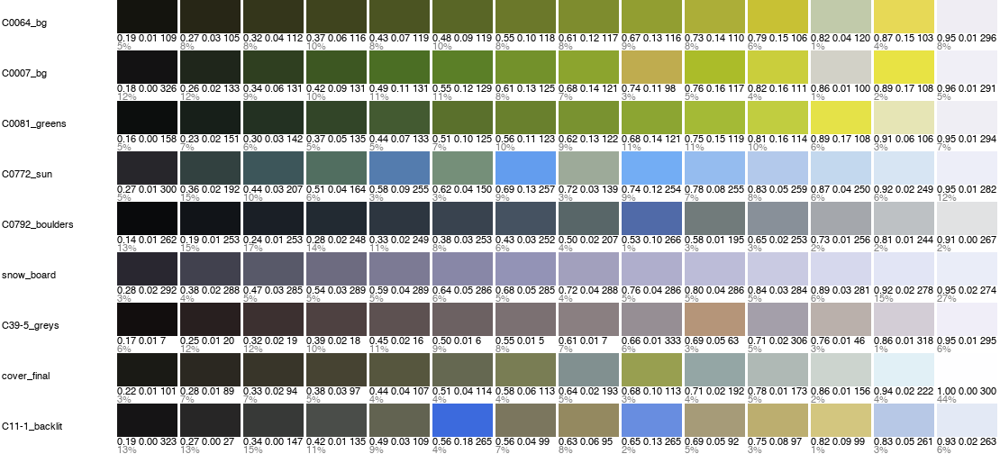

Colour that doesn't go muddy
Front page: the tutorial. Code: src/palette.py, work/ex2.py, work/ex3.py, work/swatch.py in the study folder.
Two of Oga's colour sentences survive the trip into pixels exactly, and both can be measured on his plates.
1. The green ramp: chroma rises into the light
If a big value difference is not joined by colours that keep their chroma, it goes muddy, for the same reason white plus black makes grey. (p.44, C-0081)
Measure it. Cluster each green plate in OKLab (value weighted up so value structure wins over hue noise), keep the green clusters (hue 95–170°), and look at hue and chroma against value. I used 36 clusters from C-0081, C-0064 and C-0007:
c = kmeans(lab*[1.5,1,1], 12, seed=0) / [1.5,1,1]
l = lab_to_lch(c); l = l[(deg(l[:,2]) > 95) & (deg(l[:,2]) < 170)]
ph = np.polyfit(L, h, 1) # -> h = 141 - 37 L (rounded to 145 - 40 L)
# chroma: a straight rise fits: C = 0.27 (L - 0.18), capped at ~0.17

fig. Fourteen clusters per plate, dark to light, with L, C and hue under each. In every green plate the lightest step is the most chromatic.
The fitted ramp is one line of code:
def oga_green(L0=0.26, L1=0.88, n=7, warm=0.0):
return ramp_path(L0, L1, n, lambda L: 145 - 40 * L - 20 * warm,
lambda L: float(np.clip(0.27 * (L - 0.18), 0.012, 0.17)))
Hue walks from blue-green in the dark to yellow in the light, and chroma keeps rising all the way up. His highlight is lemon or chrome green, never green plus white.
See it fail. The same end colours on a lit mound, three ways:

nb176. His (measured) | fitted | a straight OKLab line between the same ends | a mid green lightened with white and darkened with black, mixed in linear light as paint roughly does. The last is the mud: chroma falls as value rises, and the lit side goes chalky.
In pixel art we already hue-shift ramps. What the book adds is the chroma rule, and a slope for it.
2. Coloured greys belong to places
Greys that feel coloured… coloured greys scattered through give vividness and lustre. (p.48) Brown-grey, green-grey, purple-grey, red-grey, yellow-grey: a range equal to the normal colours. (p.103, C39-5)
Measure it. On his overcast board C39-5, 92% of the pixels have chroma under 0.04. They split into two alternating tints, red-grey (h ≈ 10) and purple-grey (h ≈ 320), with one ochre (h 63) and one blue.
The trap: tints tied to value steps. That's how pixel artists build ramps, so I tried it first: red, purple, red, purple up the value ladder, with the ochre as step 6.

nb177. Neutral | one warm tint | tints by value step. The ochre smears across the sky. The numbers barely moved (blurΔE 2.27 against neutral 2.34) and by eye it was the worst.
The fix: tints by place. Give each place its grey: earth and trunks red-grey, sky and far buildings purple-grey, the lit dry grass ochre, one blue accent. Build a palette with both greys at each value and let each pixel take the nearest, so the tint follows what the pixel is:
fams={'red-grey':(0.022,12),'purple-grey':(0.022,320)}
P=[lch(l,c,h) for l in Ls for (c,h) in fams.values()]
P+= [lch(l,0.07,65) for l in Ls[4:]] # the lit ochre ground (the point)
P+= [lch(Ls[3],0.05,240)] # the one blue accent
d=((lab[...,None,:]-P[None,None])**2*np.array([2,1,1])).sum(-1)
v2=P[np.argmin(d,-1)]

nb178. His board | 24 neutral greys (blurΔE 2.06) | 24 tinted greys by place (1.37). Same colour count, same values. The neutral one looks like a photograph with the colour turned off.
(blurΔE is the mean OKLab distance after a 1.5-px blur of both images, the master-copy student's "at a squint" measure. It confirmed the eye here; for the value-step trap it didn't. Look first.)
3. How I use both in the paintings
Every palette in the passage copies and places is written as named OKLCh triplets, so the decisions are readable in the code. From P1's crowns:
P = dict(hole=c(0.17, 0.03, 125), dim1=c(0.25, 0.04, 130), dim2=c(0.32, 0.055, 130),
mid1=c(0.40, 0.08, 135), mid2=c(0.48, 0.10, 132),
lit1=c(0.57, 0.125, 130), lit2=c(0.65, 0.14, 126), lit3=c(0.74, 0.15, 116), ochre=c(0.80, 0.13, 95), ...)
Chroma rises with L; the hue leans yellow at the top; the darks are a warm-green near-black, not black. From the overcast coast, every grey is tinted by place: violet sky (sk1=c(0.80, 0.012, 300)), cool grey-green forest (f1..f4, h 150–175), warm brown-grey gravel (g0..g2, h 60–70) with a violet-grey shadow step (g3, h 280).
For the generic painter I wrote a family builder from one key colour (painter.palette_for). The lit family walks hue toward yellow and raises chroma; the shadow family pulls hue toward the sky's (reflected light) and drops chroma slightly; plus one warm variant for the object's colour in shadow. It gets the palette right. How far a generic painter gets otherwise is how-to 11.